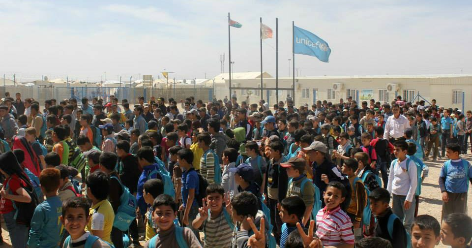

Zaatari Camp - One Month In

Elin Hofman is an SCI-volunteer from the Netherlands, currently in Amman, Jordan. She fulfills her service as long-term volunteer for Save the Children Jordan. She is currently working with Syrian refugees in Jordan, in Zaatari camp. This is her second report.
Zaatari is one of the biggest refugee camps in the world, it's becoming a city. However the houses will be tents and caravans. A lot of organizations are working in the camp and Save the Children Jordan is one of them. One of their programs is the 'Education for All' program in which they encourage all children to go to school and help them with the problems they're facing during their time at school, I will work as a volunteer in this programme. For one month already Jordan is my home, a month that has gone very fast and in which a lot of things have happened. Sometimes it feels like I have just arrived, sometimes it feels like I've been here for so much longer than just a month.
Getting Stuck In
Being the immense and huge place that Zaatari is, it's taken some time to find out what's happening, who is doing what and what I can contribute to Save the Children Jordan. I've spent the last few weeks observing what's going on, trying to get the impact of the Zaatari life. I've joined team members on outreach in the camp, to find kids who are not going to school. They'll convince the parents to send them to school and make sure they'll be registered. I've watched what's happening at the helpdesks, listened to the stories of the kids. I've joined a couple of general psychosocial sessions to see what it's like, so I can help to implement sessions at another school. I've helped in preparing and implementing the first sessions there.
Zaatari Life
During these weeks, I've experienced that the life in Zaatari is a hard life. Sometimes, for example when you enter a classroom, you might forget the difficult situation the kids are in, because they'll be singing and making you feel welcome. Or outside when kids come to shake hands and say hello. Those happy faces show strength and courage. However, their hard life will get to you when you're at the helpdesk office of Save the Children Jordan. It's the place where you'll hear their stories. Of kids who lost one of their parents, who saw how their brother or sister got killed, who are sad, who can't focus on their schoolwork anymore, who are aggressive...
Sand into Mud
The Zaatari life will also get you when it's raining and the sand changes into mud, the warmth changes into cold and the roads change into swimming pools. The teachers are making jokes to bring swimming suits, but the reality is that this is the place where 20.000 kids are living. It's their home, it's everything they've got...